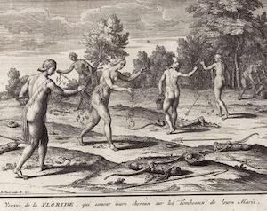
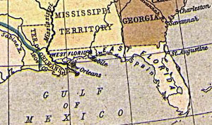
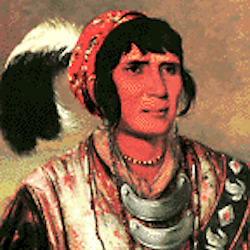
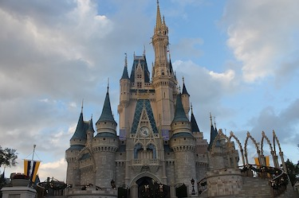
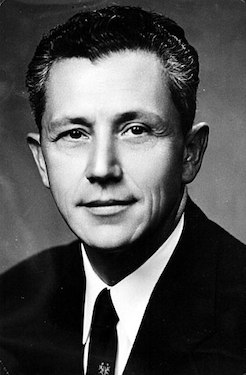

La floride n'a pas toujours été un état des Etats Unis. Pendant de nombreux siècles, elle a été sous l'occupation des européens. Elle fut découverte par l’Espagnol Juan Ponce de León en 1513 et baptisée. Enjeu des puissances coloniales, elle passa successivement sous la souveraineté de l'Espagne et de la Grande-Bretagne. Elle devint un territoire (1822) puis un État américain (1845).
Les colonies européennes entre guerre et changement
Tribus indigènes

Amérindiens en Floride. Gravure de Bernard Picart, vers 1721.
À l'époque des premiers contacts avec les Espagnols (xvie siècle), la population de Floride devait être comprise entre 100 000 et 350 000 habitants. Avec la colonisation espagnole, la population amérindienne s'effondra à cause des maladies importées par les conquérants et des violences.
Decouverte Espagnol
Selon une légende populaire, l'Espagnol Juan Ponce de León aurait découvert la Floride en cherchant la fontaine de jouvence. Il débarqua sur la côte orientale de la péninsule entre le 2 et le 8 avril 1513. Il baptisa l'endroit « La Pascua Florida ». À partir de 1521 le territoire fut connu sous le nom de La Florida.
Colonie française
L'amiral Coligny qui cherchait à fonder une colonie-refuge huguenote envoie Ribault et Laudonnière en Floride. Le huguenot français Jean Ribault aborda la côte orientale de Floride le 30 avril 1562 et construisit le Charlesfort dans l'archipel aujourd'hui nommé Beaufort en Caroline du Sud.
Le 30 juin 1564, René de Laudonnière fonda la colonie de Fort Caroline en honneur du roi de France Charles IX près du site actuel de Jacksonville. Les Espagnols débarquent en Floride en 1565 pour en chasser les Français.
1er Occupation Espagnol
Le 8 septembre 1565, la colonie espagnole de Saint Augustine fut fondée par Pedro Menéndez de Avilés : elle devint la plus ancienne colonie des États-Unis occupée en continu par des Européens.
Ils commencèrent à édifier des missions pour évangéliser et encadrer les Amérindiens.
Le 20 septembre 1565, Menéndez de Avilés s'empara du Fort Caroline. Menéndez renomma le fort « San Mateo ». Deux ans plus tard, celui-ci fut repris par le Français Dominique de Gourgues.
Mais la colonisation espagnole fut rendue difficile par les épidémies, comme celle de 1659. Très vite, la Floride devint un refuge pour les esclaves car grâce aux lois espagnols ils avaient des droits légaux.
1er Occupation Britannique
Pendant la guerre de Sept Ans (1756-1763), l'Espagne se rangea dans le camp français contre la Grande-Bretagne. Les Britanniques finirent par remporter le conflit et le traité de Paris, signé en 1763, modifia considérablement la carte des colonies d'Amérique du Nord :

Floride orientale et Floride occidentale en 1810.
Madrid dut céder la Floride, en échange de La Havane à Cuba. La métropole britannique divisa le territoire en deux entités : la Floride orientale, avec pour capitale Saint Augustine, et la Floride occidentale avec pour principale ville Pensacola.
Ces derniers tentèrent de produire de l'indigo, du raisin, du riz, du coton et de la soie mais les résultats furent médiocres à cause de la mauvaise qualité des sols.
La Floride fut un enjeu de la guerre d'indépendance des États-Unis (1775-1783) opposant les Britanniques aux insurgés américains et leurs alliés franco-espagnols. Les Espagnols s'emparèrent de Pensacola en 1781 et d’une grande partie de la Floride Occidentale. Le traité de Paris redonna la Floride à l'Espagne.
2e Occupation Espagnol
La Floride devint un foyer d'immigration pour les Américains attirés par les terres offertes et les esclaves noirs en fuite.
Quant aux colons anglais, ils n'acceptaient pas la souveraineté espagnole : ils se révoltèrent en 1810 et fondèrent une éphémère République libre et indépendante de Floride occidentale.
Le 27 octobre 1810, le président des États-Unis James Madison annexa la Floride occidentale, considérée comme faisant partie de l'achat de la Louisiane. Fulwar Skipwith et le gouvernement de la Floride occidentale refusèrent dans un premier temps cette annexion. William C. C. Claiborne fut chargé par Washington de prendre possession du territoire en décembre 1810, qui fut intégré au Territoire d'Orléans.
Les Amérindiens séminoles, situés en Floride orientale, commencèrent à attaquer la Géorgie aux États-Unis, ce qui provoqua des incursions de l'armée américaine. La première guerre séminole fut menée par Andrew Jackson en 1817-1818 ; peu après, les Américains contrôlaient effectivement la Floride orientale par le traité d'Adams-Onís signé le 22 février 1819 et qui prit effet en juillet 1821.
Le Territoire de Floride était désormais placé sous la souveraineté américaine.
Une évolution constante depuis son intégration en tant qu'état des Etats-Unis
Souveraineté américaine et guerres séminoles

Le chef séminole Osceola.
En 1832, le gouvernement des États-Unis signa le traité de Payne's Landing avec certains des chefs séminoles, en leur promettant des terres à l'ouest du Mississippi s'ils acceptaient de quitter la Floride.
Le 3 mars 1845, la Floride devint le 27e État des États-Unis avec pour premier gouverneur William Dunn Moseley. À la veille de la guerre de Sécession, la Floride était l'État le moins peuplé du Sud des États-Unis, 44 % étaient des esclaves. Elle rejoignit les États confédérés d'Amérique quelques semaines plus tard et s'engagea dans la guerre de Sécession.
Guerre civile et Reconstruction
L'État de Floride envoya trois délégués au Congrès provisoire confédéré en 1861-1862, le corps législatif des États sudistes pendant le conflit. John Milton, le gouverneur de la Floride de l'époque, organisa une milice et renforça la défense de son État. Il défit le colonel George Washington Scott puis il fit hisser le drapeau des États-Unis sur le capitole de l'État de Floride à Tallahassee et lut la proclamation d'émancipation des esclaves le 12 mai. Entre 1885 et 1889, le corps législatif de l'État vota des lois destinées à empêcher les petits Blancs et les Afro-Américains à exercer leur droit de vote et d'éligibilité.
Comme dans les autres États sudistes, le Congrès de la Floride resta longtemps dominé par le parti démocrate.
Migrations et développement économique
Les lynchages et les violences racistes dirigées contre les Noirs se multiplièrent après la Première Guerre mondiale. Pour échapper aux persécutions et aux discriminations, près de 40 000 Afro-Américains quittèrent la Floride pour s'installer dans les villes du Nord-Est des États-Unis.
Le tourisme devint une activité majeure de la Floride et fut favorisé par la construction de voies ferrées dans la deuxième moitié du xixe siècle. Le boom ferroviaire et foncier des années 1920 résulta de l'afflux d'investissements extérieurs, bénéficia à des villes comme Palm Beach et Miami.
Pourtant, c’est dans les années 1930 que furent aménagés les premiers parcs d'attraction qui font la réputation de la Floride

Chateau de Walt Disney World Resort
Dès 1933, le président américain Franklin Delano Roosevelt, mit en place le New Deal pour sortir le pays de la crise. En Floride, ce programme prit des formes multiples. Il faut attendre l'avènement de la société des loisirs dans les années 1960 pour voir s'installer le Walt Disney World Resort à Orlando Grâce à l'automobile et à son climat tropical, la Floride était devenue une destination touristique de premier plan pour les Américains.
Seconde Guerre mondiale et guerre froide
La Seconde Guerre mondiale marqua un tournant dans l'économie de la Floride. Miami devint progressivement l'un des principaux centres économiques de l'Amérique latine. Dans les années 1960, l'État vécut au rythme de la conquête de l'espace qui participa à sa renommée et créa de nombreux emplois.
Lutte pour les droits civils

Thomas LeRoy Collins 33e gouverneur de Floride
Les deux décennies qui suivirent la Seconde Guerre mondiale furent marquées par la lutte pour l'égalité des Afro-Américains dans le Sud des États-Unis. En 1944, la cour suprême des États-Unis interdit le système des primaires blanches qui limitait le droit de vote des Noirs. En 1954, l'arrêt de la cour suprême des États-Unis interdisant la ségrégation dans les écoles ne fut pas respecté partout. Le mouvement contre la ségrégation eut de nombreux partisans parmi la population blanche de l'État, au premier rang desquels se trouvait Thomas LeRoy Collins, gouverneur de la Floride entre 1955 et 1961.
Les Noirs ne sont pas les seules victimes des discriminations, comme le montre la campagne anti-homosexuels menée par la chanteuse Anita Bryant à Miami en 1977.